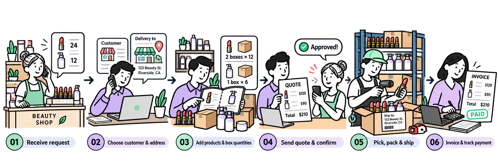
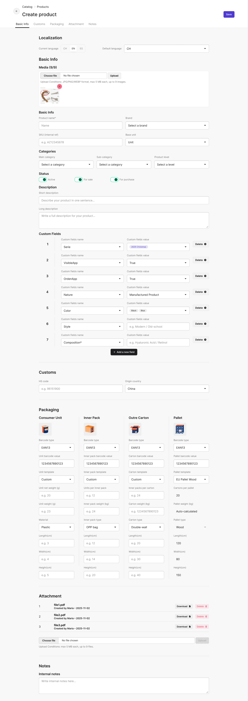

The client described tasks. I had to decide what the system needed.
For every request, I listed the user, the information, the possible states and the next action.
A back-office system for a Spanish beauty wholesaler to manage products, retailer orders, stock, shipping and invoices.


Project overview
The client was a Spanish beauty, skincare and accessories wholesaler. I turned the client's requests into a module roadmap, mapped the work into flows and screens, then reviewed each module with the client. The system was developed and launched.
My first job was to turn spoken requests into something everyone could check: who does the task, what information they need, what can change and what should happen next.
For every request, I listed the user, the information, the possible states and the next action.
A product entered in Catalog would later be used in sales, shipping, stock and invoicing. The same data could not be rebuilt on every screen.
The interface had to make those differences obvious so unfinished work could not trigger shipping or invoicing by mistake.
For each client request, I wrote down the business question first. Then I defined what information and screens were needed to answer it.
The screen was not the end of the process. It gave the client something concrete to correct before I moved to the next module.
The research process I can substantiate is client-led requirements discovery and iterative module review. I do not have evidence of direct observation, interviews with frontline staff or prototype usability testing.
For example, a product team enters a lipstick's SKU, languages, packaging and customs details once. Sales can then add that lipstick to an order, warehouse knows how it is packed and finance knows which sale to invoice.
The salesperson may need to save the work before it is ready to send. The prototype separates a draft, a quotation and a confirmed order. Shipment and invoicing follow the confirmed sale.
This flow is reconstructed from the client-led module reviews and the states and fields visible in the prototype. The project material does not confirm formal observation or usability testing with frontline staff.

I was not inventing a list of screens. I was translating real work into system tasks, then giving every interface feature a clear reason to exist.
I chose these screens because they show the hand-off: someone creates a product, sales adds it to a retailer’s order, and the saved product record keeps its details available to other teams. The trade-offs below are reconstructed from the prototype, not recovered records of formal design tests.
A product manager records the details that sales, warehouse and shipping will need later.

1 2 3 4Why the form is organised this way
Need: The prototype supports several product languages and a default language.
Decision: Keep those versions on one product record so the SKU still points to one item.
Trade-off: One record is easier to reuse, but someone must keep translations aligned. I would test this with a real product entered in each required language.
Need: The form includes repeatable custom-field rows for product-specific details.
Decision: Use editable name-and-value rows with Add and Delete beside the row.
Alternative and trade-off: A fixed field set is more consistent but may not fit every category. Configurable rows adapt better, but need rules for field names and value types.
Need: The prototype includes an HS code and country of origin.
Decision: Store these values on the product record, where teams can reuse them if the business needs them for cross-border orders.
Trade-off: Reuse avoids re-entry, but customs requirements depend on the product and destination. Required-field rules need confirmation from the client.
Need: The form shows consumer unit, inner pack, outer carton and pallet.
Decision: Give each level its own group for its packaging details.
Alternative and trade-off: One text field is faster to fill in, but cannot clearly express quantities at different levels. Separate groups are clearer to compare, but require correct conversion and barcode rules.
A salesperson turns a retailer’s request into a draft, checks the addresses and product quantities, then chooses whether to save, quote or confirm.
1234Need: The prototype has a Draft state and a Save as Draft action.
Decision: Keep saving separate from confirming an order.
Impact to verify: Can a salesperson return to unfinished work without accidentally triggering the next step?
Need: The form shows customer, invoice address and shipping address as separate fields.
Decision: Keep each address selectable in the order.
Trade-off: More choice supports different destinations, but increases selection risk. Test with a customer whose billing and delivery addresses differ.
Need: The prototype supports multiple products, quantities, units, prices and discounts.
Decision: Use an editable line-item table and show order totals in the same screen.
Alternative and trade-off: One product per page would simplify each entry but make it harder to review a whole order. A dense table may speed up scanning for familiar users, but must stay readable at realistic order sizes.
Need: The prototype offers both Convert to Quotation and Confirm Order.
Decision: Keep these actions separate so the user can choose the correct next step.
Impact to verify: Ask users to explain what each action will cause before they click. Track mistaken confirmations and order rework if product data is available.
After setup, a colleague can check the product without reopening the original form or asking the catalog team to repeat its details.
123Need: Teams need to check a record without accidentally changing it. Decision: Present saved values as a readable detail page, with “Edit” actions beside the sections they change.
Need: A product is more than its name and SKU. Decision: Group identity, media, categories, packaging and logistics on one record so each team can find the information it uses.
Need: A warehouse worker needs to tell a single item from an inner pack, carton or pallet. Decision: Show four levels side by side with their own barcode, quantity and dimensions.
This is a retrospective reference check completed while documenting the case, not research conducted during the original project.
Its product packaging documentation makes unit quantities and packaging barcodes concrete. Useful comparison for the product setup and warehouse hand-off.
Shows how item records, alternate units, locations and sales documents connect in a small and mid-sized business ERP.
Emphasises links between finance, order management and inventory, which is a useful lens for the order-to-invoice flow.
Provides a reference for connecting receiving, inventory movement, fulfilment and finance across a broader enterprise operation.
These examples are not a popularity ranking. Vendor documentation describes each vendor’s own product and does not verify the features or outcomes of this project. Stripe focuses on payments and financial infrastructure rather than general ERP.
The prototype shows design intent. The measures below are ways to test that intent, not results reported from this project.
Client reviews and requirement checks happened module by module. Chloé recalls that the system was developed and launched.
No frontline usability-test records or verified post-launch usage, efficiency, revenue or satisfaction metrics are available in the materials reviewed.
Ask sales and warehouse users to complete a realistic order, partial shipment and invoice task. Observe errors and recovery, then compare the same measures before and after release if baseline data exists.
I can show how the client’s requests became connected product, sales, inventory, customer and finance workflows. I cannot yet claim that the design increased efficiency or revenue because no verified outcome data is available.